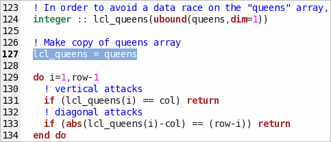
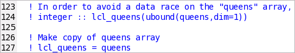
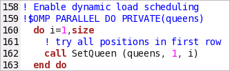
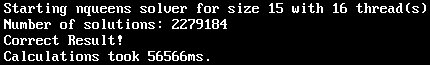

You identified that the most time-consuming function is
nqueens_IP_setqueen. If you click the
You identified that the most time-consuming function is
nqueens_IP_setqueen. If you click the
 Source Editor button from the
Source pane, the VTune Amplifier opens the source
nqueens_parallel.f90 file at the hotspot line in the
default code editor. You see that the OpenMP* cycle is calling the recursive
setQueen function that initializes the
queens array. To avoid a data race, this array is copied
in each thread (see line 127):
Source Editor button from the
Source pane, the VTune Amplifier opens the source
nqueens_parallel.f90 file at the hotspot line in the
default code editor. You see that the OpenMP* cycle is calling the recursive
setQueen function that initializes the
queens array. To avoid a data race, this array is copied
in each thread (see line 127):
Note
Depending on the sample code version, your source line numbers may slightly differ from the numbers provided in this tutorial.

This means that the number of local copies is equal to the number of threads. Since the function is recursive, the array is also copied in every function call, which is unnecessary and creates a big overhead.
To resolve this issue, you may enable OpenMP to make a copy of the array per thread. To do this:
Comment out lines 124 and 127.

Search and replace all lcl_queens entries with queens.
Edit line 159 to add the PRIVATE(queens) directive.
This enables the OpenMP run-rime to create a private copy of the array for each thread.

Save the changes made in the source file.
Browse to the directory where you extracted the sample code (for example, /home/vtune/nqueens_fortran/linux).
Rebuild your target in the release mode using the make command as follows:
$ make clean
$ make
The nqueens_parallel application is rebuilt.
Run nqueens_parallel as follows:
./nqueens_parallel 15

System runs nqueens_parallel. Note that the execution time has reduced from 256710 ms to 56566 ms. This means that the proposed solution gives 200144 ms of CPU time reduction.
To identify other possible performance issues, you may run the Concurrency analysis and see how effectively your application is parallelized.